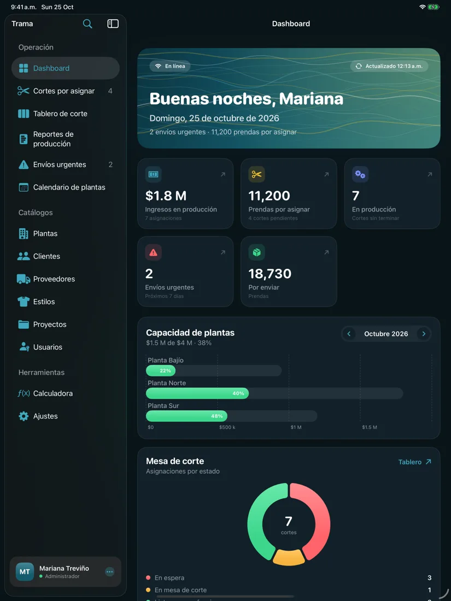
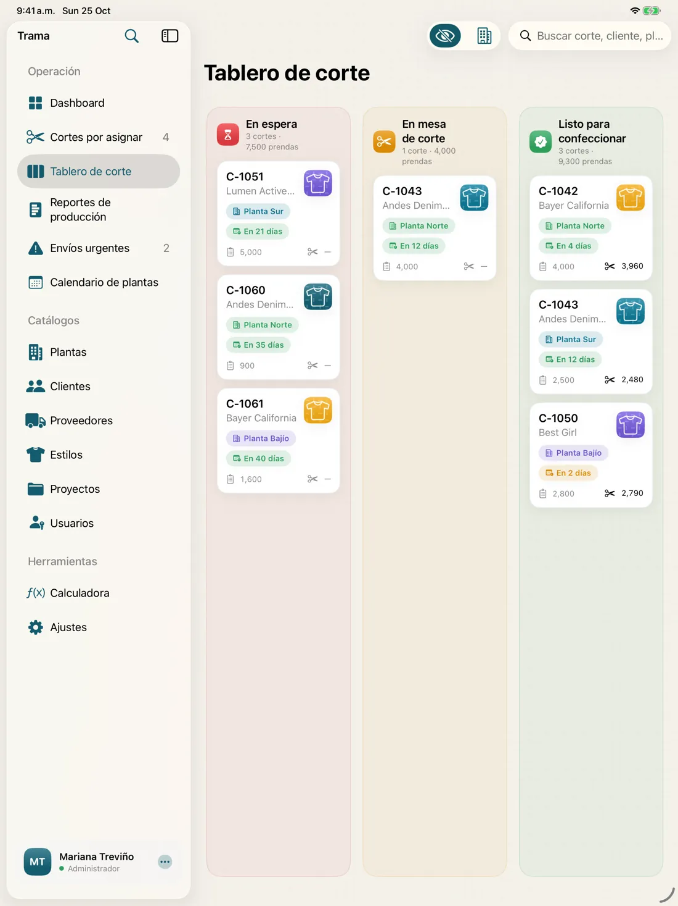
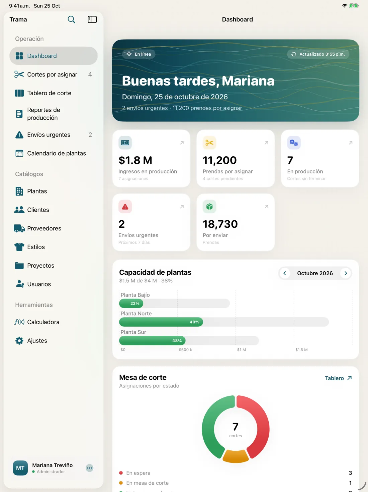

Entregas a tiempo
Ves qué vence esta semana y qué prendas faltan por enviar, antes de que sea tarde.
La forma moderna de producir ropa · iPad, Android y Web
Trama reúne cortes, plantas, producción y envíos en un sistema que tu equipo aprende en minutos. Deja atrás las libretas, los Excel y las llamadas para preguntar cómo va todo: cada quien reporta desde la tableta y tú ves la fábrica completa, al momento.

Nacido en el piso de producción de Industrial Peña Balles: años de cortes, plantas y entregas reales convertidos en una herramienta que cualquier fábrica puede usar.
Digitaliza tu operación
La mayoría de los talleres y maquiladoras todavía corren con papel, hojas de cálculo y mensajes. Funciona… hasta que un corte se pierde o una entrega se atrasa.
Beneficios
Menos tiempo persiguiendo información y más tiempo produciendo. Estos son los cambios que se notan desde el primer mes.
Ves qué vence esta semana y qué prendas faltan por enviar, antes de que sea tarde.
Reparte el trabajo entre plantas según su capacidad real y evita cuellos de botella.
Dashboard con producción, ingresos y avance por planta. Sin esperar el reporte de fin de mes.
Corte, planta, envíos y dirección trabajan sobre la misma información, sin teléfono descompuesto.
Se reporta en un par de toques desde la tableta. Nada de pasar papeles a Excel al final del día.
Usuarios con permisos, contraseñas cifradas, respaldos automáticos y datos cifrados en la nube.
Qué es Trama
Trama es un software de producción textil para fábricas de confección y maquiladoras. Registra los cortes (lista, prenda, estilo, cliente, cantidad y precio), los asigna a tus plantas según su capacidad mensual, sigue cada corte por la mesa de corte, producción, plancha, empaque, bodega y envío, y avisa de las entregas urgentes. La app para iPad y Android funciona sin internet; la versión Web lleva Trama a cualquier computadora de la oficina.
Para quién es
Reparte los cortes de cada cliente entre tus plantas sin pasarte de su capacidad y entrega a tiempo.
Controla la producción por planta: operarios, faltas, prendas producidas, plancha, empaque y bodega.
Lleva el control de cortes en la mesa y la cantidad real cortada contra la planeada.
Ve en un tablero qué está en producción, qué falta por enviar y qué entrega está en riesgo.
Producto
Diseñado para tableta, para usarse con una mano en el piso de producción y con todo el detalle en la oficina.
Cada planta tiene una capacidad mensual. Al asignar, Trama te muestra en vivo cuánto ocupa el corte en cada planta para ese mes: si cabe, si se excede y cuál tiene más espacio.
En espera, en mesa de corte, listo para confeccionar. Un tablero visual que tu gerente de cortes actualiza con el dedo.

Reportes de planta, de corte y de envío alimentan un embudo por corte: cortadas, producidas, plancha, empaque, bodega y enviadas.

Lo que vence pronto o ya venció, con prendas por enviar y registro de envío en un toque.
Inicios de producción y entregas al cliente del mes, con la capacidad de cada planta.
Meta diaria, días y meses estimados, precio por minuto e ingreso neto mientras escribes.
Clientes y proveedores con contactos ilimitados, galería de estilos con foto, proyectos y cotizaciones.
Fácil de usar
Pantallas claras, botones grandes y todo en español. Hecho junto con gerentes de piso, no con ingenieros de sistemas.
Cliente, estilo, cantidad y fecha de entrega. Listo en menos de un minuto.
Trama te dice cuál tiene espacio ese mes. Tú eliges.
Cada gerente captura lo producido, planchado, empacado y enviado desde su tableta.
Ves todo en el tablero y actúas antes de que algo se atrase.
Recorrido

Sin conexión
Con la app, tus datos viven en el iPad o la tableta Android, en una base de datos local. Sin servidores que se caen, sin pantallas de carga y sin depender de la señal en la nave.
App o Web
La app nativa en iPad o Android sigue trabajando aunque no haya señal en la nave. La versión Web pone Trama en cualquier computadora, sin instalar nada. Planta, Multiplanta y Empresa incluyen las dos.
| Característica | AppiPad y Android · para el piso de producción | WebNavegador · para la oficina y la dirección |
|---|---|---|
| Funciona sin internet | Sí. Base de datos en el dispositivo | No. Necesita conexión |
| Si se cae la red | Sí. Nadie se detiene | No. Se pausa hasta reconectar |
| Sincronización | Sí. Automática al volver la conexión | Sí. Siempre en línea |
| Velocidad | Sí. Instantánea, sin pantallas de carga | Parcial. Depende de tu conexión |
| Cámara para fotos de estilos | Sí. Toma la foto desde la tableta | Parcial. Sube archivos desde la computadora |
| Sin instalación | No. Distribución privada a tus dispositivos | Sí. Abre el navegador y entra |
| En cualquier computadora | No. iPad, tabletas y teléfonos Android | Sí. Windows, Mac o Linux |
| Ideal para | Gerentes de corte, planta y envíos | Administración, ventas y dirección |
| Precio | Desde $99 USD/mes, incluye Web | Desde $49 USD/mes |
¿Lo mejor? No tienes que elegir. Los planes Planta, Multiplanta y Empresa incluyen la app y la versión Web con los mismos datos.
Precios →Roles
Todo: dashboard, asignación, catálogos, usuarios y finanzas.
Asigna cortes, mueve el tablero y reporta el corte real.
Solo su planta: operarios, faltas, producidas, plancha, empaque y bodega.
Envíos urgentes y registro de cada envío con su número.
Precios
Elige el plan que se ajusta a tu fábrica. Precios en dólares estadounidenses (USD) por mes, más IVA.
Para empezar desde la oficina
$49$41 USD/mes + IVA
Facturación mensual$490 USD al año
Para una planta y su oficina
$99$83 USD/mes + IVA
Facturación mensual$990 USD al año
Para fábricas con varias plantas
$249$208 USD/mes + IVA
Facturación mensual$2,490 USD al año
Para grupos y operaciones grandes
Desde $590$492 USD/mes + IVA
Facturación mensual$5,900 USD al año
Un precio por empresa, no por usuario. Cada plan ya incluye a tu equipo, así que sumar un gerente no te cuesta más.
Licencias
Las apps de Trama no están en las tiendas públicas. Cada empresa recibe una licencia privada, una instalación administrada en sus dispositivos y acompañamiento real.
Elige un plan o cuéntanos cuántas plantas y usuarios tienes.
Te mostramos Trama con datos parecidos a los de tu fábrica.
Precio publicado y todo por escrito, sin costos ocultos.
Apps: distribución privada a tus iPads y Android, sin descarga pública. Plan Web: acceso con usuario y contraseña.
Migración de datos, capacitación por rol y soporte continuo según tu plan.
Preguntas
Web cuesta $49 USD al mes, Planta $99, Multiplanta $249 y Empresa desde $590, más IVA. Si pagas anual, tienes 2 meses gratis. El precio es por empresa, no por usuario.
No. Está diseñado para tableta, en español y con pantallas sencillas para cada rol. Cada gerente solo ve lo que necesita y aprende su parte en una capacitación corta; no necesitas un área de sistemas.
Dejas el papel, el Excel y las llamadas para saber cómo va cada corte. Toda la fábrica trabaja con la misma información en tiempo real: asignas por capacidad, detectas a tiempo las entregas en riesgo y tomas decisiones con datos de producción e ingresos.
La app para iPad y Android guarda los datos en el dispositivo, así que funciona sin internet, es más rápida y usa la cámara para las fotos de estilos. La versión Web no requiere instalación y se usa desde cualquier computadora, pero necesita conexión. Planta, Multiplanta y Empresa incluyen ambas.
No. Las apps se distribuyen de forma privada a las empresas con licencia, así controlas qué dispositivos las tienen y nadie fuera de tu empresa puede instalarlas. La versión Web se usa con usuario y contraseña.
Con la app, no: inicio de sesión, cortes, reportes, catálogos y gráficas funcionan sin conexión, y todo se sincroniza cuando vuelve el internet. La versión Web sí necesita conexión.
Sí. Hay app nativa para tabletas y teléfonos Android 8.0 o superior, con las mismas reglas y el mismo formato de respaldo que la de iPad.
En la app, en una base de datos local en cada dispositivo, con respaldo automático. Además puedes exportar respaldos completos cuando quieras y restaurarlos en otro iPad o Android.
Sí. La migración está incluida en Multiplanta y Empresa: importamos plantas, clientes, proveedores, estilos, cortes y reportes. Revisamos cada caso en la demo.
Es un sistema para planear y seguir la fabricación de prendas: qué cortes hay, en qué planta se producen, cuánto lleva cada uno y cuándo se envía. Trama lo hace en tableta, sin internet y con roles para cada gerente.
Sí. Trama nació en una maquiladora con varias plantas: asigna cortes por capacidad mensual de cada planta, registra la producción diaria y prioriza los envíos urgentes por fecha de entrega al cliente.
Contacto
Déjanos tus datos y te contactamos para agendar una demo con información parecida a la de tu fábrica.